终南集：布局修复前后对比
2026-09-30 · 当前本地地址 http://127.0.0.1:8099（截图拍摄时服务位于 8100，中断后按项目默认端口恢复）。左侧为先前审查保存的真实截图，红框指出原问题；右侧为当前源码的浏览器实拍。手机均为 390 × 844，桌面为 1440 × 900。工具区采用相同分区起点，页面内容高度因修复而变化。
本次未执行登录、发布、充值或付费生成。审查浏览器拦截了非必要写入请求，拍摄前清除了因此产生的网络提示；没有改变截图中的表单内容或套餐数据。此前文本域限宽和表单间距修复保持有效。
1. 手机顶栏、分区标题与卡片宽度
顶栏约 169px → 113px；导航不再换成多行，按钮至少 44px。MODES 标签按内容宽度显示；移除卡片右侧固定 64px 空栏。
修复前：顶栏分散，标题被拉长
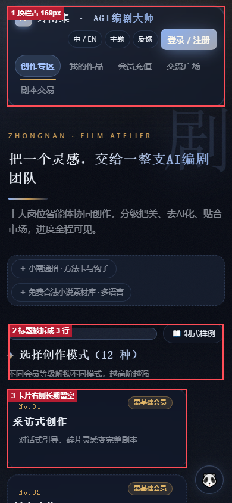
修复后：两层导航，全宽卡片
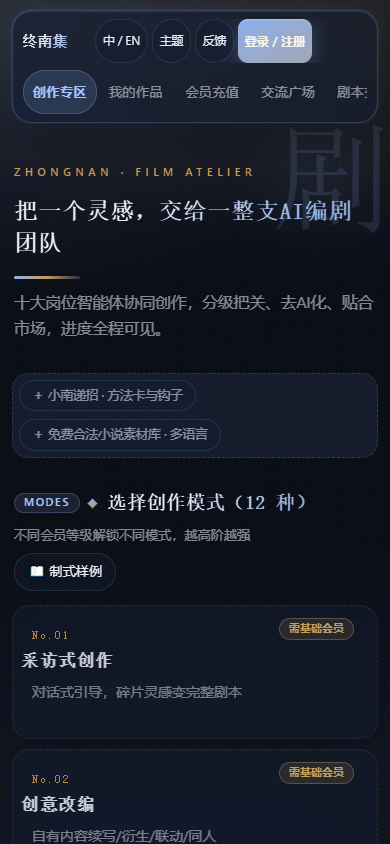
2. 手机会员页标题与权益
“会员与积分”不再拆断；说明独占下一行，套餐权益提升至 14px。作品页和广场页同类标题也统一为纵向层级。
修复前：标题与说明挤在一行
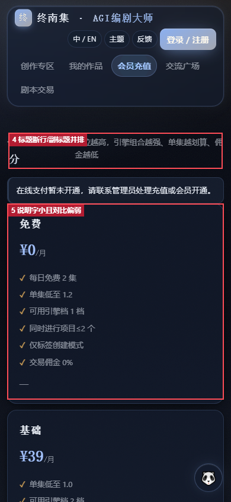
修复后：标题完整，说明分行
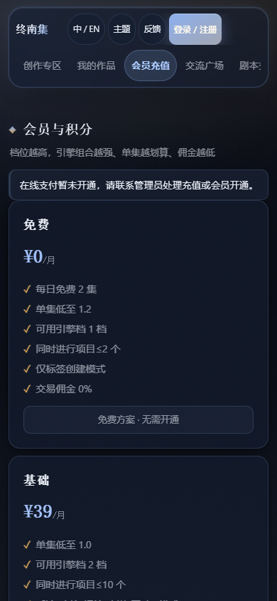
3. 五个工具卡：空栏与费用挤占标题
费用从绝对定位改为独立信息行；标题不再预留固定右内边距，卡片恢复全宽，说明至少 14px。右图工具费用位于卡片下方，所有五个工具使用同一规则。
修复前：右侧空栏，标题贴近费用
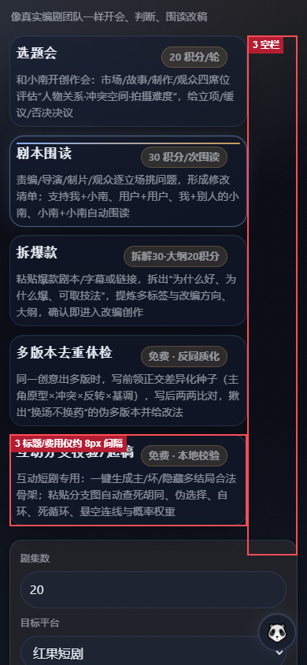
修复后：全宽标题，费用独立一行
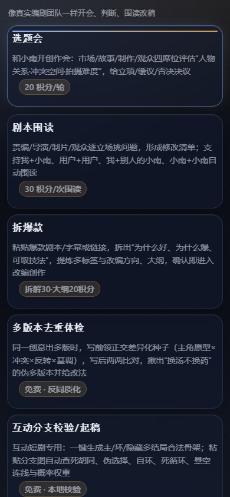
4. 工作台：无效空白与按钮遮挡
从已滚走导航的工具区进入时，工作台头部约 y=188px → y=9px。打开工作台时隐藏助手，输入区域和“开始拆解”不再被覆盖。
修复前：顶部空白，助手盖住按钮
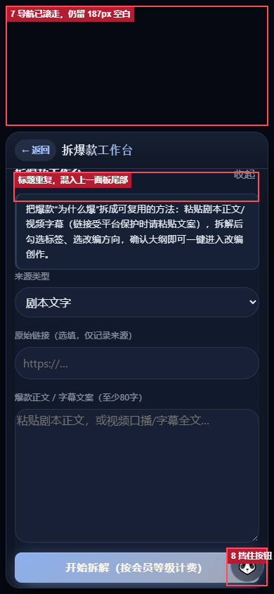
修复后：从顶部展开，按钮完整
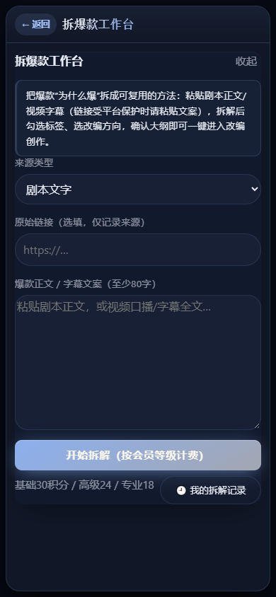
5. 工作台：当前标题与内容不一致
原先进入“拆爆款”却混入“智能标签工作台”。现在共同显示入口隐藏所有非目标面板，点击和 Observer 自动更新都遵循互斥规则。
修复前：拆爆款标题下显示智能标签
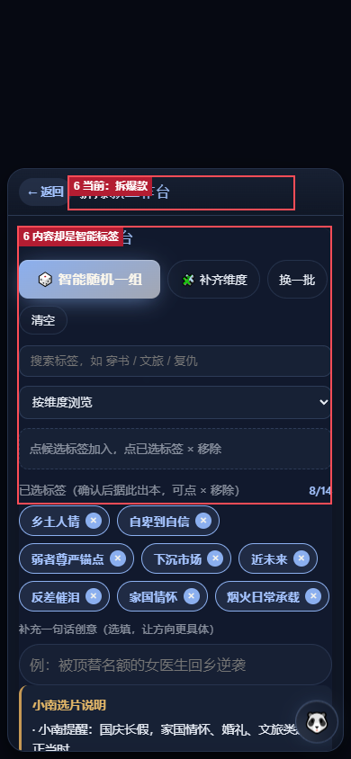
修复后：只显示拆爆款输入区

6. 桌面免费套餐：底部空白与无意义横线
免费卡按自身内容自然收束；权益到状态栏间距约 86px → 14px。原先横线替换为“免费方案 · 无需开通”，不增加虚构权益或装饰。
修复前：拉齐高度留下大片空白
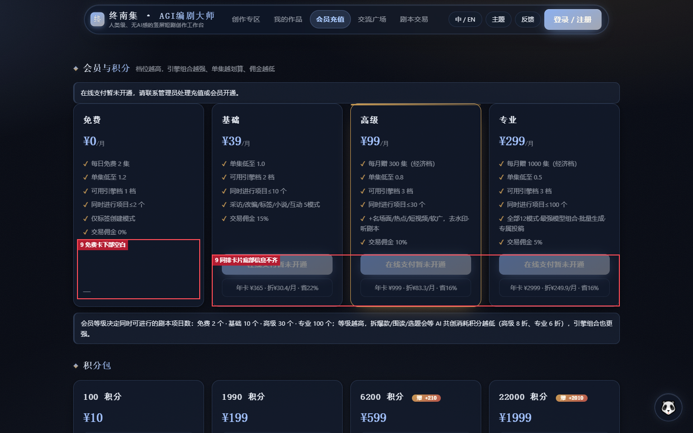
修复后：自然高度，明确免费状态
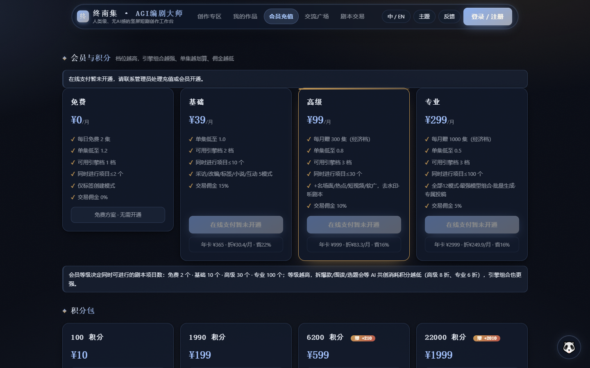
验证与边界
五个工具在 390px、1440px 下分别首次进入和返回，当前面板、返回按钮与助手状态均复核；主页面检查 320/390/768/1440px；另补 320px 英文标题溢出的回归。文本域仍仅允许纵向拉伸，并限制最大宽度；相邻表单保持间距。
未真实登录验证授权模式生成结果、作品详情和管理后台，不能将这部分页面宣称为已经全面验收。